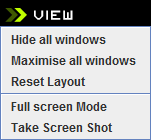
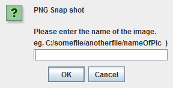

|
| Contents :: Online Forum |
The view menu is as it states, all about the views of Autopilot.

These are all very similar. The first will hide all of the windows except the Autopilot Bar, maximise all will put everything into a nice layout for working, and resetting the layout takes the Autopilot windows to there original size and layout.
This will allow you (quite obviously) to work in full screen.
This will pop up a window of where you would like to save a screen shot of your work. Click browse and select the folder and enter the filename for the screenshot. It will save the screen shot as a Portable Network Graphic (PNG).
